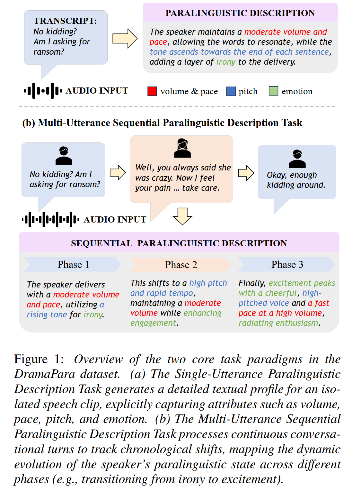
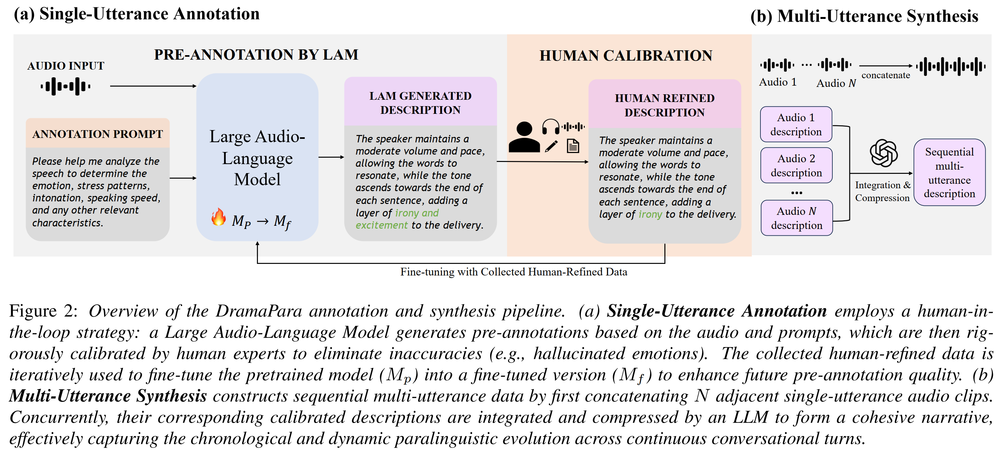

Task Paradigms

Large audio-language models (LAMs) struggle to parse paralinguistics (e.g., emotion, intonation) in acoustically complex environments. Existing datasets rely heavily on clean speech or studio recordings, causing a domain gap to real-world usage. We introduce DramaPara, a TV drama dataset with expressive emotions and naturalistic background effects for robust paralinguistic understanding. DramaPara includes two tasks: single-utterance isolated description (~492h) and multi-utterance sequential description (~213h). With mixed training (SFT + RL), open-source LAMs achieve a 30.93% average relative improvement in complex scenarios.


Comparison between existing datasets and our dataset samples.
From these examples, it is easy to hear a clear contrast: prior datasets are typically recorded in very clean acoustic conditions, and the emotions in speech often carry noticeable acted characteristics. In comparison, DramaPara contains much more realistic background sounds, while the vocal expressions are more complex, intense, and natural—better reflecting real-world conversational scenarios.
Comparison of a single-utterance sample and its multi-utterance contextual counterpart.
Transcription: "No kidding? Am I asking for ransom?"
Description: The speaker maintains a moderate volume and pace, allowing the words to resonate, while the tone ascends towards the end of each sentence, adding a layer of irony to the delivery.
Transcription:
1) "No kidding? Am I asking for ransom?"
2) "Well, you always said she was crazy. Now I feel your pain.Anyway, I just thought you should know, huh? Take care."
3) "Okay, enough kidding around."
Description: The speaker delivers with a moderate volume and pace, utilizing a rising tone for irony. This shifts to a high pitch and rapid tempo, maintaining a moderate volume while enhancing engagement. Finally, excitement peaks with a cheerful, high-pitched voice and a fast pace at a high volume, radiating enthusiasm. The overall delivery effectively blends irony, liveliness, and excitement.
Comparison between base model outputs and fine-tuned model outputs on DramaPara samples.
Transcription: Ellie, you can't call me! the cops are all over my ass Because they think I helped you escape.
Ground Truth (Label): The speaker’s voice carries a high pitch, brimming with a palpable urgency. Their tone is rapid, and their demeanor appears tense, effectively communicating a deep sense of desperation. The volume is moderate.
Before Fine-Tuning (Zero-shot): The speaker's voice is high-pitched and emotional, with a lot of stress on certain words. They speak quickly and with a lot of intensity.
After Fine-Tuning: The speaker's voice, characterized by its high pitch and rapid tempo, conveys a sense of urgency and desperation, delivered at a moderate volume.
Transcription:
1) "No kidding? Am I asking for ransom?"
2) "Well, you always said she was crazy. Now I feel your pain.Anyway, I just thought you should know, huh? Take care."
3) "Okay, enough kidding around."
Ground Truth (Label): The speaker delivers with a moderate volume and pace, utilizing a rising tone for irony. This shifts to a high pitch and rapid tempo, maintaining a moderate volume while enhancing engagement. Finally, excitement peaks with a cheerful, high-pitched voice and a fast pace at a high volume, radiating enthusiasm. The overall delivery effectively blends irony, liveliness, and excitement.
Before Fine-Tuning (Pretrained): 1. Sentence: 'No kidding, am I asking for ransom? You always said she was crazy. Anyway, I just thought you should know, take care.' Emotion: Neutral; Stress Pattern: None; Intonation: Neutral; Speaking Speed: Medium. 2. Sentence: 'Okay, enough kidding around.' Emotion: Neutral; Stress Pattern: None; Intonation: Neutral; Speaking Speed: Medium. 3. Sentence: 'Anyway, I just thought you should know, take care.' Emotion: Neutral; Stress Pattern: None; Intonation: Neutral; Speaking Speed: Medium.
After Fine-Tuning: Initially, a sarcastic and mocking tone is used, characterized by a high-pitched, rapid voice and moderate volume. This shifts to a calm, steady voice with low volume and gentle upward intonation, conveying empathy. Finally, a cheerful and relaxed tone is adopted, maintaining a moderate pace and volume, with rising intonation at the end of sentences.
Selection criterion: from popular American TV series, we prioritized shows with relatively richer scene diversity and more expressive character portrayals.